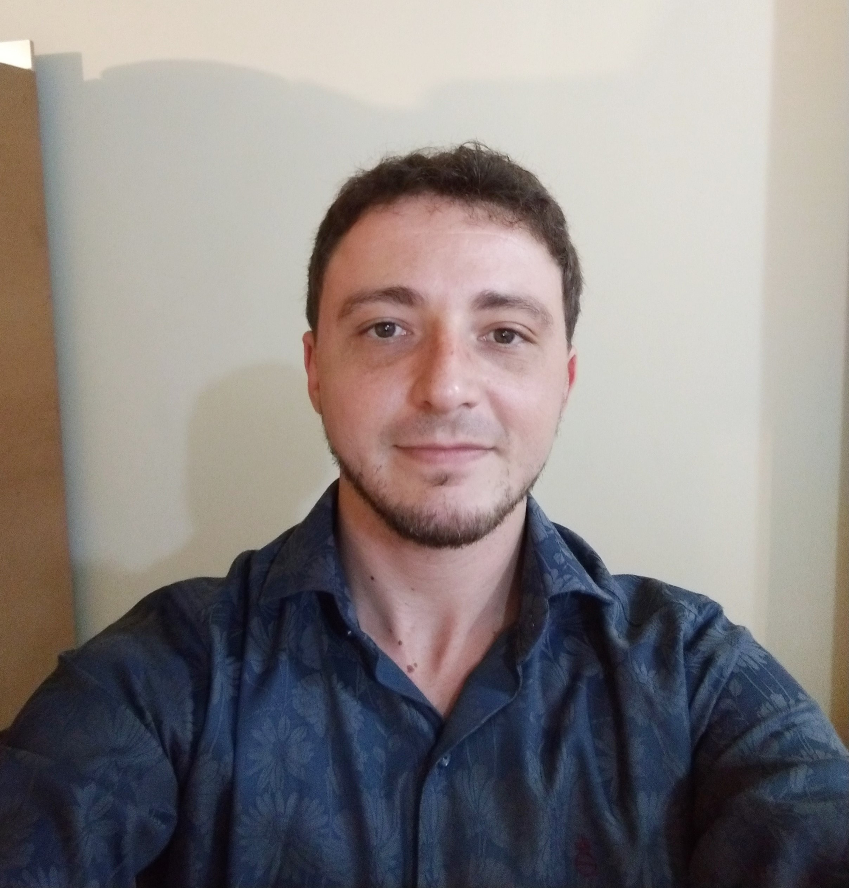

Nome: Tadeu Furtado Henriques
Nacionalidade: Brasileiro
Idade:30 anos
Endereço: Juiz de Fora,Cep:36016000
Email: tadeufurtadohenriques@hotmail.com
Áreas de interesse: Engenharia de software e Engenharia Eletrica
(2013-2015) - Nível Técnico
• Técnico em Mecatrônica, formado pela UNITEN- Unidade Integrada e Técnica de Ensino (Lavras-MG).
(2017) - Nível profissionalizante
• Elétrica Industrial, formado pelo SENAI (São Gonçalo do Sapucaí)
(2016-2019) - DANVIGOR Industria e Comércio de Laticínios Ltda. – São Gonçalo do Sapucaí
Função: Eletricista I
Principais Atividades:
Identificação e solução de problemas elétricos.
Manutenção preventiva e corretiva de equipamentos elétricos e eletrônicos.
Montagem e manutenção de painéis de comando elétrico.
Estagio
(10/2015–11/2015) Polenghi Indústria Alimentícia Ltda.- São Vicente de Minas
Principais atividades: Manutenção de produção e setor de utilidades (Vapor, Ar comprimido e água gelada).
2016- Estágio de 120 horas na B&B INOX(Lambari-MG)
Principais atividades: Auxiliar na montagem e fabricação de peças e equipamentos.